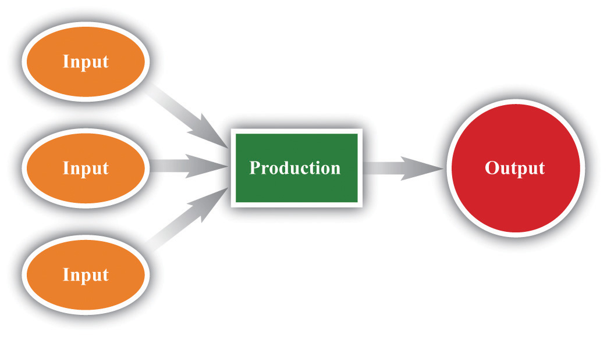

In early 2002, a team from the International Monetary Fund (IMF) flew to Buenos Aires, Argentina. Argentina had been prospering during most of the 1990s, but more recently it had begun to run into economic problems. The IMF is an organization that attempts to help countries having financial difficulties.
An IMF team consists of professionally trained economists. These teams visit many countries, such as Argentina, on a regular basis. In this chapter, we imagine that the IMF added you to this mission and asked you to report back on the state of the Argentine economy. As we proceed, we think about how you might have approached this task.
You arrive at Aeropuerto Internacional Ministro Pistarini de Ezeiza Airport, which is a clean and modern airport on the outskirts of Buenos Aires. You ride into the city in a new car along modern highways lined with fancy billboards. When you get to the city center, you notice that there are luxurious shopping malls. You see high-end stores selling luxury brands, such as Louis Vuitton, Versace, Hermes, and Christian Dior. The city seems prosperous, reminiscent of Paris or New York. Just looking around, you see immediately that you are not in one of the really poor countries of the world.
Figure 18.1
Source: Image taken by authors.
As you explore the city, though, you begin to look more closely and notice that things are not quite what they seemed at first glance. The luxury stores do not have many customers in them. Some buildings show signs of a lack of maintenance; it has been a while since they were repainted. Some stores are boarded up or bear signs saying that they are going out of business. There seem to be a lot of people who are not working or who are making a living selling goods on the street.
Reflecting on these conflicting clues to Argentina’s prosperity, you quickly realize that it is difficult to assess the health of an economy by casual observation. In addition, you have seen almost nothing of the country. Argentina covers over one million square miles; it is almost one-third of the size of the United States and has a population of nearly 40 million. The more you think about this, the harder the problem seems. Forty million people are buying things, selling things, making things, and consuming things every day. It seems an impossible task to make sense of all this activity and say anything useful about the economy as a whole. That challenge is the subject of this chapter.
How can we evaluate the overall performance of something as complicated as an economy?
If you think about this question for a bit, you will realize that it has more than one dimension.
These two ideas guide our discussion in this chapter.
Think for a moment in very general terms about what happens in an economy. An economy possesses some resources. These include the time and abilities of the people who live in the economy, as well as natural resources, such as land or mineral deposits. An economy also possesses various means of changing, or transforming, one set of things into other things (see the following figure). For example, we have a process for making tea. We produce tea by taking cold water, energy, and dried leaves and transforming those inputs into a hot beverage that people like to drink. The simple act of making a cup of tea is an example of production.
Figure 18.2 From Inputs to Output
One of the main economic activities is production: the transformation of inputs (raw materials, labor time, etc.) into output (goods and services that people value).
We are interested in measuring how much production occurs in an economy. Obviously, however, we cannot hope to count all the times that people drop a teabag into a cup, and it would not make much sense to do so. Economic activity typically involves more than production; it also includes the notion of exchange—buying and selling. If you make a cup of tea for yourself at home, we do not think of this as economic activity. If you buy a cup of tea at your local coffee shop, we do think of this as economic activity. A very rough definition of economic activity is as follows.
Economic activity is the production of goods and services for sale.
Any definition this straightforward is bound to be too simple, and we will see that there are several subtleties in the actual measurement of economic activity, particularly since some goods and services are not actually bought and sold. Still, if you keep this idea in mind, it will help you as we progress through the basics of economic measurement in this chapter.
After you have read this section, you should be able to answer the following questions:
Macroeconomics is data driven. Government statisticians and other organizations gather vast amounts of data on the performance of various aspects of the macroeconomy, and macroeconomists try to make sense of all this information.
If we want to explain economic data, then we first have to get the measurement right, and a big part of this is ensuring that we get the accounting right. To make sure that we do, we begin by constructing simple examples. This is not because a simple example is enough to describe an economy; but because cannot hope to understand the complicated accounting unless we do the simple accounting correctly.
To understand the economic health of Argentina—or any other country—we begin by looking at production in the economy. Let us imagine that Argentina produces a single good—pizza. Each pizza is sold for 10 pesos (which is about US$3.33). To be concrete, suppose that every worker in the economy works in a pizza factory in which (1) each hour worked produces 1 pizza, (2) each worker works 40 hours per week, and (3) each worker works 50 weeks per year. Suppose there are about 15 million workers in the economy.
We measure total economic activity by determining the total value of the pizzas produced in this economy. We obtain this by multiplying the previous numbers together. There are
40 pizzas per worker per week,so there are
2,000 pizzas per worker per year (= 40 × 50),which means that there are
30,000,000,000 pizzas per year (= 40 × 50 × 15,000,000).The value of those pizzas is
300,000,000,000 pesos per year (= 40 × 50 × 15,000,000 × 10).The total value of all the production in the economy is called nominal gross domestic product (nominal GDP)The market value of the final goods and services produced by an economy in a given period of time.. The word nominal indicates that something is being measured in terms of money—in this case, Argentine pesos. For this economy, nominal GDP is 300 billion pesos per year.
The economy we have just described is extremely stylized and somewhat dull from a culinary perspective. We begin with such a simple economy because it allows us to understand the basic workings of the economy without getting bogged down in a lot of details. We did, however, choose numbers that are the right order of magnitude for the Argentine economy in 2002: the total number of workers in Argentina in 2002 was about 15 million, and nominal GDP was about 300 billion pesos. In 2010, estimated GDP for Argentina was 1.4 trillion pesos, and the workforce was over 16 million.
We now consider a more formal definition of nominal GDP and go through it term by term.
Nominal GDP is the market value of the final goods and services produced by an economy in a given period of time.
Our example pretended that there was only a single good produced in the economy—pizza. In real economies, millions of different goods and services are produced, ranging from cars at an assembly plant to haircuts sold by a local barber. If our goal is to measure the overall output of an economy, we are faced with the problem of how to add together these goods and services. How do you add 60,000 cubic meters of natural gas, 1,000 trucks, and 2,000 head of cattle (to pick just a few examples of goods produced in Argentina)?
We need a common denominator. Economists use the market value of the goods and services. This means that the common denominator is dollars in the United States, pesos in Argentina, kroner in Sweden, euros in Portugal, and so on. Nominal GDP equals total output produced in a year, valued at the actual market prices prevailing in that year. We choose market value for two reasons. One is simplicity: data on the market prices of goods and services are relatively easy to come by. The second reason is much more important. Market value tells us how much people are willing to pay for different goods and services, which gives us a measure of the relative value of different commodities. For example, if a new laptop computer costs $2,000 and a new hardcover novel costs $20, then the market is telling us that people are willing to trade off these goods at the rate of 100 novels to 1 laptop. In effect, the market is telling us that the laptop is 100 times more valuable than the novel.We take as given here that the market price—which tells us how much people are willing to spend—is a reasonable measure of the value of a good or a service. More precisely, it measures the value of the good or service “at the margin,” meaning it measures the value of having one more unit of the good or the service. Explaining why this is usually a sensible interpretation of the market price (and when it is not) is a topic covered in microeconomics courses.
Let’s look at an example of the calculation. Table 18.1 "Calculating Nominal GDP" considers a very small economy that produces three goods and services: T-shirts, music downloads, and meals. We show data for two years. To calculate GDP in 2012, we take the market value of the T-shirts ($20 × 10 = $200), the market value of the music downloads ($1 × 50 = $50), and the market value of the meals ($25 × 6 = $150). Adding these, we discover that nominal GDP is $400:
($20 × 10) + ($1 × 50) + ($25 × 6) = $200 + $50 + $150 = $400.Doing the same operations for 2013, we find that nominal GDP is $442:
($22 × 12) + ($0.80 × 60) + ($26 × 5) = $264 + $48 + $130 = $442.We can see that lots of things changed between the two years. The price of T-shirts and meals slightly increased, while music downloads became cheaper. Firms produced more T-shirts and music downloads but fewer meals.
Table 18.1 Calculating Nominal GDP
| Year | T-shirts | Music Downloads | Meals | Nominal GDP ($) | |||
|---|---|---|---|---|---|---|---|
| Price ($) | Quantity | Price ($) | Quantity | Price ($) | Quantity | ||
| 2012 | 20.00 | 10 | 1.00 | 50 | 25.00 | 6 | 400.00 |
| 2013 | 22.00 | 12 | 0.80 | 60 | 26.00 | 5 | 442.00 |
On the surface, 2013 appears to have been a good year in this economy. Nominal GDP increased substantially relative to 2012. Dig a little deeper, however, and it is harder to interpret this change. Production increased for some products and decreased for others. Some prices increased, and others decreased. Was 2013 really better than 2012? We come back to this question shortly.
In Table 18.1 "Calculating Nominal GDP", we assumed that all of the goods and services purchased were purchased by their final users. That is, the T-shirts, music downloads, and meals were all purchased by households for consumption purposes. (Households are not the only group that consumes final goods and services in an economy. Firms, the government, and households in other countries can also be final consumers.) We term these final goods (T-shirts) and final services (music downloads and restaurant meals).
In contrast, intermediate goods and servicesProducts that are used—and completely used up—in the production of other goods and services. are products such as raw materials and energy that are used—and completely used up—in the production of other goods and services.There are two kinds of goods used in the production of other goods. Intermediate goods are completely used up as part of the production process. Capital goods—such as factories and machines—are not completely used up but live to produce another day. We discuss capital goods in more detail in Chapter 20 "Globalization and Competitiveness". We do not include intermediate goods in GDP. Think about a bottle of wine, for example. It might be bought by a consumer at a wine store, in which case it is counted in GDP. Alternatively, it might be bought by a restaurant to sell with its meals. In this case, the cost of the meal is included in GDP, and the cost of the wine is already included in the cost of the meal. The restaurant may have purchased the wine from a supplier, but that purchase is not included as part of GDP. If both the sale of wine to the restaurant and the sale of that wine to a customer of the restaurant were counted in GDP, the same bottle of wine would be counted twice. By excluding the sale of intermediate goods in calculating GDP, we avoid such double counting.
Being intermediate is therefore not a feature of the good itself. It depends on how the good is used. Wine sold to a consumer directly is a final good; wine sold to a restaurant is an intermediate good. This fits with the idea that we want GDP to measure goods as they are valued by consumers.
Most of the time when we talk about an economy, we are speaking of a particular country. Thus we talk about US GDP, Argentine GDP, Indian GDP, or Uruguayan GDP. Similarly, most of the statistics that are collected refer to economic activity within a country. The term economy can be much more general, though, for it simply means a particular set of households and firms. We can speak of the world economy, the North Dakota economy, the Buenos Aires economy, or even the economy of a street of your hometown. The basic concepts are the same no matter what region we choose to discuss.
GDP is measured over a specified period of time. In principle, that time period could be anything—a week, a month, a quarter (three months), or a year. In the United States and many other countries, GDP is measured on a quarterly basis. However, it is typically reported on an annual basis. In other words, government statisticians might measure GDP for the first three months of 2012 and find that it was $4 trillion. That is, over that three-month period, $4 trillion worth of goods and services was produced. The number would typically be reported as “$16 trillion on an annual basis.”
It does not make any sense to talk about US GDP at the instant the clock strikes noon on February 29, 2012. The amount of GDP produced at any instant of time is, for all intents and purposes, zero. Instead, we think of GDP as a flowAny variable that has a time dimension.. We can count the number of pizzas produced only if we specify some interval of time. Other variables can be sensibly measured even at a given instant. For example, we could—in principle at least—count the number of pizza ovens in existence at any given time. The number of pizza ovens at a point in time is an example of a stockAny variable that can be measured in principle at an instant of time..
The requirement that we count goods and services produced in a certain period means that we should also ignore the resale of goods produced in earlier periods of time. If a construction company builds a new house and sells it to you, the production of that home is counted as part of GDP. By contrast, if you buy a house that is 10 years old, the sale of that house is not counted in GDP. (However, if you employed a real estate company to find the old house for you, payment to that company would be included as part of GDP.) In the same way, if you purchase a used textbook that was produced 3 years ago, that purchase is not counted in GDP.
In macroeconomics, our data come to us in the form of time series. Time series are a sequence of dated variables: GDP in 2000, GDP in 2001, GDP in 2002, and so on. Usually these data are annual, but they could also be quarterly or monthly (or even daily or hourly). If we go to the Economic Report of the President (http://www.gpoaccess.gov/eop), we can find data for nominal GDP. In the United States, the Bureau of Economic Analysis (BEA; http://www.bea.gov/national/index.htm) in the Department of Commerce is responsible for calculating nominal GDP. Table 18.2 "Nominal GDP in the United States, 2000–2010" gives an example of a time series.
Table 18.2 Nominal GDP in the United States, 2000–2010
| Year | Nominal GDP (Billions of Dollars) |
|---|---|
| 2000 | 9,951.5 |
| 2001 | 10,286.2 |
| 2002 | 10,642.3 |
| 2003 | 11,142.1 |
| 2004 | 11,867.8 |
| 2005 | 12,638.4 |
| 2006 | 13,398.9 |
| 2007 | 14,061.8 |
| 2008 | 14,369.1 |
| 2009 | 14,119.0 |
| 2010 | 14,660.2 |
It is often more revealing to show a time series as a picture rather than a list of numbers. Figure 18.3 "Nominal GDP in the United States, 2000–2010" shows the data from Table 18.2 "Nominal GDP in the United States, 2000–2010" in a graph. Looking at this figure, we see immediately that the US economy grew over these years. The level of nominal GDP (in billions) was $9.8 trillion in 2000 and $13.2 trillion in 2006.
Figure 18.3 Nominal GDP in the United States, 2000–2010

Nominal GDP in the United States grew for most of the last decade but declined in 2009.
Source: 2011 Economic Report of the President, accessed July 29, 2011, http://www.gpoaccess.gov/eop/tables11.html, Table B-1.
Let us return to your International Monetary Fund (IMF) mission in Argentina. From talking to other members of the team, you learn that the Argentine government has statistics on nominal GDP. This is good news, for it means you do have information on the total value of production in the economy. Figure 18.4 "Nominal GDP in Argentina, 1993–2002" shows nominal GDP for Argentina over the decade prior to your arrival (1993–2002). In 1993, it was 237 billion pesos. In 2002, it was 313 billion pesos. Thus nominal GDP grew by about one-third over the course of the decade.
Figure 18.4 Nominal GDP in Argentina, 1993–2002

The graph shows nominal GDP in Argentina between 1993 and 2002. Nominal GDP grew overall during this period, although it decreased for several years in the second half of the decade.
Source: International Monetary Fund World Economic Outlook database (http://www.imf.org/external/pubs/ft/weo/2010/01/index.htm).
Now suppose that in your hotel room one morning you hear on the radio that government statisticians in Argentina forecast that nominal GDP next year will be 300 million pesos greater than this year. How should you interpret this news? Without some context, it is difficult to make any judgment at all.
The first thing to do is to work out if 300 million pesos is a big number or a small number. It certainly sounds like a big number or looks like a big number if we write it out in full (300,000,000). If we stacked 300 million peso bills on top of each other, the pile would be over 100 miles high. But the real question is whether this is a big number relative to existing nominal GDP. We have been told that the change in nominal GDP is 300 million, but we would like to know what this is as a growth rateThe change in a variable over time divided by its value in the beginning period., which is a percentage change.
Toolkit: Section 31.21 "Growth Rates"
A growth rate is a percentage change in a variable from one year to the next. That is, a growth rate is the change in a variable over time divided by its value in the beginning period.
For example, the growth rate of GDP is calculated as follows:
In our example for Argentina, the percentage change is equal to the change in nominal GDP divided by its initial value. Remember than nominal GDP in 2002 was about 300 billion pesos, so
When we express this change in nominal GDP as a percentage, therefore, we see that it is in fact very small—one-tenth of 1 percent. If you heard on the radio that nominal GDP was expected to grow by 300 million pesos in a 300-billion peso economy, the correct conclusion would be that nominal GDP would hardly change at all. By contrast, if the news announced a projected increase in nominal GDP of 30 billion pesos, the percentage change is 30 billion/300 billion = 0.1 = 10 percent. This is a substantial change in nominal GDP.
In your bid to understand the economy of Argentina, you have seen that nominal GDP increased by one-third between 1993 and 2002. One possibility is that Argentina is producing one-third more pizzas than it was a decade ago—30 billion pizzas instead of 22.5 billion pizzas. This would be good news. Producing more pizzas is something we would normally think of as a good thing because it means that we are experiencing economic growth: there are more goods and services for people to consume.
In talking to people about the Argentine economy, however, you learn something disconcerting. They tell you that the prices of goods and services are greater this year than they were last year and much greater than they were a decade ago. You begin to wonder: perhaps Argentina is producing no more pizzas than before but instead pizzas have become one-third more expensive than they formerly were. We would typically feel very differently about this outcome. Yet another possibility is that there has been an increase in both the number of pizzas produced and the price of pizza, and the combined effect doubled nominal GDP. We need a way of distinguishing among these different possibilities.
In our pizza economy, it is easy to tell the difference between an increase in production and an increase in prices. We can measure increased production by counting the number of pizzas, and we can measure increased prices by looking at the price of a pizza. We call the number of pizzas real gross domestic product (GDP)A measure of production that has been corrected for any changes in overall prices. (the word real here indicates that we are effectively measuring in terms of goods and services rather than dollars), and we call the price of a pizza the price levelA measure of average prices in the economy. in the economy.
Then it follows that
nominal GDP = price level × real GDP.In our example, the price level is 10 pesos, and real GDP is 30 billion pizzas. Multiplying these numbers together, we find that nominal GDP is indeed 300 billion pesos. Sometimes, for shorthand, we use the term price to mean the price level in a given year and the term output to mean real GDP in a given year.
Real GDP is the variable that most interests us because it measures the quantity of goods and services produced in an economy. We would therefore like to find a way to decompose nominal GDP into the price level and the level of real GDP in actual economies. But real economies produce lots of different goods and services, the prices of which are continually changing. In addition—unlike our fictional economy, where it makes sense to measure real GDP as the number of pizzas—there is no “natural unit” for real GDP in an actual economy.
In fact, even in our pizza economy, there is still an arbitrariness about the units. Imagine that we cut each pizza into 10 slices. Then we could just as easily say that real GDP is 300 billion pizza slices instead of 30 billion pizzas, but that the price level—the price per slice—is 1 peso. We would still conclude that nominal GDP—the number of slices multiplied by the price per slice—was 300 billion pesos.
So is it possible to say, in a real economy producing multiple goods and services, that nominal GDP is equal to the product of the price level and the level of real GDP? Does it still make sense to write
nominal GDP = price level × real GDPas we did for the pizza economy? The answer, as it turns out, is yes.
To see how this works, we begin by looking at how prices and output change from one year to another. Specifically, we divide 2013 nominal GDP by 2012 nominal GDP. This is one measure of the growth in nominal GDP from 2012 to 2013.Specifically, this measures the gross growth rate of nominal GDP. It is equal to 1 + the percentage change in nominal GDP. See the toolkit for details of the mathematics of growth rates. Remember that nominal GDP equals total output produced in a year, valued at the prices prevailing in that year. Comparing nominal GDP in 2012 and 2013 therefore gives us
Now we use a trick. Multiply above and below the line by “output in 2013 valued at 2012 prices” and then rearrange:
Look carefully at this calculation to make sure you understand what we did here.
Now examine the two ratios on the right-hand side of the second line. The first compares the cost of the same bundle of goods (output in 2013) at two different sets of prices—those prevailing in 2013 and those prevailing in 2012. Think of the bundle as being a grocery cart full of goods. If you compare how much it costs to buy exactly the same collection of goods at two different times, you have a measure of what has happened to prices.
The second ratio on the right-hand side is a measure of the increase in real GDP. It uses the same prices to compare the value of output in 2012 and 2013. In other words, it tells you how much it costs to buy two different collections of goods at exactly the same prices.
To reiterate, the first ratio compares the same bundle of goods at two different sets of prices. The second ratio compares two different bundles of goods at the same prices. We have succeeded in separating the change in nominal GDP into two components: a price change and a change in real GDP.
We can illustrate this technique using the data in Table 18.1 "Calculating Nominal GDP". In that example, the growth in nominal GDP equals 10.5 percent because
Now we choose an arbitrary year that we call the base year. For the base year, we set the price level equal to 1. In our calculations, we choose 2012 as our base year. Because nominal GDP equals the price level times real GDP, this means that real GDP in 2012 is $400.
When we choose 2012 as our base year, we use the prices of T-shirts, music downloads, and meals in 2012 for our calculations of real GDP for 2012 and 2013. Table 18.3 "Real GDP Using 2012 as the Base Year" shows what we find. The first row is exactly the same as in Table 18.1 "Calculating Nominal GDP". Nominal GDP in 2012 is—by definition—the same as real GDP in 2012 because we are using 2012 as the base year. The second row of the table calculates real GDP for 2013; it uses 2013 quantities but 2012 prices. Notice also the heading in the final column of the table: “Real GDP (Year 2012 dollars).” The term in parentheses tells us that everything is being measured according to the prices that prevailed in our base year of 2012.
Table 18.3 Real GDP Using 2012 as the Base Year
| Year | T-shirts | Music Downloads | Meals | Real GDP (Year 2012 Dollars) | |||
|---|---|---|---|---|---|---|---|
| 2012 Price ($) | Quantity | 2012 Price ($) | Quantity | 2012 Price ($) | Quantity | ||
| 2012 | 20 | 10 | 1 | 50 | 25 | 6 | 400 |
| 2013 | 20 | 12 | 1 | 60 | 25 | 5 | 425 |
We previously calculated that 2013 nominal GDP—output in 2013 valued at 2013 prices—was $442. By contrast, Table 18.3 "Real GDP Using 2012 as the Base Year" shows that, when valued in year 2012 dollars, the total output of this economy in 2013 is $425. In other words,
Nominal GDP increased by 10.5 percent between the two years, but real GDP is increased by only 6.25 percent. From this we see that not all of the increase in nominal GDP is due to increased output. Some of the increase is because prices increased between 2012 and 2013.
In our pizza economy, we said that nominal GDP was equal to the price per pizza multiplied by the quantity of pizza. In our example here, we have calculated something very similar. Nominal GDP equals the price level multiplied by real GDP. In the base year, the price level equals 1 (that is what it means to choose the base year), and so real GDP equals nominal GDP in that year. Because we can calculate the increase in the price level and the increase in real GDP from one year to the next, we can obtain a time series for the price level and a time series for real GDP. In each year, nominal GDP equals the price level in that year times real GDP in that year.
There is, however, one difference between the calculation for our pizza economy and measurement in real economies. In the pizza economy, because there was a single good, we were able to measure real GDP in physical units—the number of pizzas. In real economies, there is no single good, and so we measure real GDP in base year dollars rather than as a physical quantity. The price level in, say, 2013 is not, strictly speaking, the price of real GDP in terms of 2013 dollars but rather is the price of a base year dollar in terms of 2013 dollars.
But this is a technical difference. From an intuitive point of view, it is simplest to think about real GDP as being a physical quantity—a number of pizzas. In this book we therefore imagine that real GDP is actually a bundle of goods and services all melded together to create a composite good. We call that good “units of real GDP,” and we call the price level the price of a unit of GDP. In fact, we could think about the pizza economy in that same way. Even a basic pizza is itself composed of dough, sauce, and cheese: it is a bundle of items melded into one. So when we talk about the physical quantity of pizza, we are really talking about the number of bundles of these ingredients. Likewise, when we talk of real GDP, we are talking about a bundle of goods that we measure in base year dollars.
Real GDP is our most basic measure of economic performance. It is a very broad measure because it tells us how much economic activity of any kind (at least, any kind that we can measure) is going on in our economy. Real GDP tells us how much we have produced of all the different goods and services that people enjoy and want to consume. For this reason, real GDP statistics are among the most closely watched of all the figures released by a government.
Figure 18.5 "Real GDP in the United States, 1929–2009" shows real GDP for the US economy from 1929 to 2008 in year 2000 dollars. The figure shows that the US economy grew substantially over those years. The level of real GDP was $865.2 in 1929 and $10,842 in 2008 (in billions of $2000).If you look at this figure, you will see that real GDP is listed as “chain weighted.” This method of calculating real GDP averages growth rates by using different base years. By averaging, this measure has the virtue that calculations of real GDP are less sensitive to the selection of an arbitrary base year. For more information on chain-weighted measures, see Charles Steindel, “Chain-Weighting: The New Approach to Measuring GDP,” Current Issues in Economics and Finance 1, no. 9 (1995): 1–6, accessed June 28, 2011, http://www.newyorkfed.org/research/current_issues/ci1-9.pdf.
Figure 18.6 "Real GDP (in 1993 Pesos) in Argentina in the 10 Years Prior to 2002" shows real GDP in Argentina and thus reveals that our earlier data for nominal GDP were indeed misleading. Nominal GDP may have increased between 1993 and 2002, but real GDP in 2002 was at the same level as in the previous decade. Moreover, real GDP had been decreasing for the prior four years before the IMF visit.
Figure 18.6 Real GDP (in 1993 Pesos) in Argentina in the 10 Years Prior to 2002

Real GDP in Argentina was essentially flat between 1993 and 2002.
Source: International Monetary Fund World Economic Outlook database (http://www.imf.org/external/pubs/ft/weo/2010/01/index.htm).
This helps you to make sense of your contradictory impressions of Buenos Aires. Argentina became poorer, not richer, in the late 1990s and early 2000s. The presence of luxury goods stores, for example, is a reminder that Argentina was a relatively rich country, but the absence of shoppers in those stores tells you that people are not feeling very rich at this time.
After you have read this section, you should be able to answer the following questions:
If nominal GDP increased in Argentina but real GDP did not, then prices must have increased. So now we look in more detail at the measurement of prices.
Remember that we defined the change in prices as follows:
We can use the data in Table 18.1 "Calculating Nominal GDP" to calculate this ratio as well. This time, however, we compare the cost of the same basket of goods (in this case, output in 2013) according to the prices prevailing at two different times. The basket of goods in 2013 is shown in Table 18.4 "Calculating the Price Index" as the quantities of the three goods and services produced that year: 12 T-shirts, 60 music downloads, and 5 meals. As we saw earlier, the cost in dollars of this basket of goods and services is $442.
Table 18.4 Calculating the Price Index
| Year | T-shirts | Music Downloads | Meals | Cost of 2013 Basket ($) | Price Index | |||
|---|---|---|---|---|---|---|---|---|
| Price ($) | Quantity | Price ($) | Quantity | Price ($) | Quantity | |||
| 2012 | 20 | 12 | 1 | 60 | 25 | 5 | 425 | 1.00 |
| 2013 | 22 | 12 | 0.80 | 60 | 26 | 5 | 442 | 1.04 |
Table 18.4 "Calculating the Price Index" also shows the total cost of consuming the 2013 basket in 2012, which we already know is $425. Thus the price index for 2012 is $425/$425 = 1, and the price index for 2013 is $442/$425 = 1.04.Frequently, the value for the price index is multiplied by 100, so the price index for 2013 would be given as 104. For the simple three-good economy described in Table 18.1 "Calculating Nominal GDP", we therefore have the following:
Prices increased by 4 percent, real GDP increased by 6.25 percent, and nominal GDP increased by 10.5 percent.
To summarize, the basic principle for calculating inflation is as follows: (1) We decide on a bundle of goods and look at how much it costs in a given year. (2) Then we look at the same bundle of goods in the following year and see how much it costs. (3) The ratio of the two is called a price indexA measurement of the cost of a bundle of goods in a particular year relative to a base year. and provides a measure of one plus the inflation rateThe growth rate of the price index from one year to the next..
Toolkit: Section 31.8 "Correcting for Inflation"
A price index for a given year is calculated as the cost of a bundle of goods in that year divided by the cost of the same bundle in the base year. The growth rate of the price index from one year to the next is a measure of the inflation rate.
There are many different price indices that are constructed and used for different purposes. They can be constructed for particular categories of goods or regions, for example. If you listen to the news, you may hear references to the Producer Price Index or the Wholesale Price Index. Ultimately, the differences among different price indices simply come down to the bundle of goods that is chosen.
Figure 18.7 "An Example of a Price Index" shows an example of a very particular price index that was used by a supermarket in Thailand to advertise its prices. The store placed two supermarket carts at the entrance with the same bundle of goods in each. The one on the left, with the black label, showed the cost of this cartload of goods at the old prices. It used to cost 1,059.50 Thai baht (approximately US$28). The one on the right, with the red label, showed that the cost of this same bundle of goods was now 916.00 Thai baht. The reduction in price for the basket of goods was 143.50 Thai baht, or about 13.5 percent.
Figure 18.7 An Example of a Price Index

A supermarket in Phuket, Thailand, used an actual basket of groceries to show that its prices had been reduced. This is an example of a price index.
Source: Image taken by the authors.
In this book, we use price indices that measure the general level of inflation. There are several such measures, but we do not need to worry about this. The differences among these different measures are usually small and typically unimportant for our basic understanding of the economy. The measure of inflation that we have used so far is called the GDP deflatorA price index that uses as the bundle of goods everything that goes into GDP., a price index that uses as the bundle of goods everything that goes into GDP. A more common measure of inflation is the Consumer Price Index (CPI)A price index that uses as the bundle of goods the typical purchases of households., which uses as the bundle of goods the typical purchases of households.
The CPI is the most familiar measure of prices. When economic commentators speak of inflation, they usually mean the percentage change in the CPI. As the name suggests, the CPI is intended to measure inflation as consumers experience it. The bundle of goods included in the CPI is supposed to correspond to the bundle of goods purchased by a typical household. This means that certain goods that are included in GDP do not show up in the CPI. For example, an increase in the price of stealth bombers does not show up in the CPI because (we hope!) households do not buy stealth bombers. However, stealth bombers do show up in the GDP deflator. At the same time, certain goods that are not part of GDP are included in the CPI—most importantly, consumer goods that are imported from other countries. Because imported goods are not produced in the domestic economy, they do not show up in the GDP deflator; however, because domestic consumers purchase imported goods, they do show up in the CPI.
Households differ dramatically in their consumption patterns, so different households have very different experiences of inflation. An individual who drives 100 miles daily to get to work views variations in the price of gasoline very differently from someone who rides a bicycle to work. The CPI captures the average experience of all households, which can be quite different from the actual experience of an individual household.
Figure 18.8 "The Inflation Rate in the United States, 1914–2008" shows the CPI inflation rate (that is, the percentage change of the CPI) from 1914 to 2008 in the United States.Inflation data and more details about the construction of price indices can be found at the website of the Bureau of Labor Statistics (BLS; http://www.bls.gov). In some early years, prices actually decreased from one year to the next, meaning that the inflation rate was negative. Since 1960, however, the United States has experienced a positive inflation rate.
Figure 18.8 The Inflation Rate in the United States, 1914–2008

Figure 18.9 "The Price Level in Argentina" shows the price level in Argentina between 1993 and 2002. The most striking thing about this picture is that there was very little inflation for most of this period. In the final year, however, prices increased substantially. Notice that our picture for the United States shows the inflation rate, whereas for Argentina we are looking at the level of prices. Either way of presenting the data is valid, but it is critical to understand the difference between them. Make sure you understand the difference between the level of prices and the percentage change in prices.
Figure 18.9 The Price Level in Argentina

The price level in Argentina was roughly constant between 1993 and 2001. However, there was a big jump in the price level in 2002.
Source: International Monetary Fund World Economic Outlook database (http://www.imf.org/external/pubs/ft/weo/2010/01/index.htm).
The actual calculation of the CPI is more complicated than our example suggests. The Bureau of Labor Statistics (BLS; http://www.bls.gov/cpi) is the US government agency that is responsible for this calculation, while other countries have similar agencies. The BLS procedure is, in essence, the one we have described: it compares the cost of the same bundle of goods in different years. However, the BLS confronts several difficulties that we have ignored so far.
Quality changes. Imagine that you now work for the BLS (you took this job after you left the International Monetary Fund [IMF]) and are asked to look at changes in the price of laptop computers. You decide to use the IBM ThinkPad computer.For the history of the ThinkPad, see “ThinkPad: A Brand That Made History,” Lenovo, accessed June 28, 2011, http://www.pc.ibm.com/ca/thinkpad/anniversary/history.html; for the 2011 specifications and prices, see “Lenovo Announces Premium ThinkPad Edge E220s, E420s SMB Notebooks,” ThinkPads.com, January 3, 2011, accessed July 20, 2011, http://www.thinkpads.com/2011/01/03/lenovo-announces-premium-thinkpad-edge-e220s-e420s-smb-notebooks. You discover that in 1992 a ThinkPad cost $4,300 on average. Then you find that it is possible to purchase a ThinkPad in 2011 for $899. You calculate the percentage change in the price as ($899 − $4,300)/$4,300 = −$3,401/$4,300 = −0.79 and conclude that the ThinkPad is 79 percent cheaper than two decades previously. You report this to your boss and then go home.
But then you start to worry. The 2011 ThinkPad is nothing like the 1992 version. The 1992 computer had 120 MB of memory and weighed over 5.5 pounds. The 2011 ThinkPad has 4 GB of memory and weighs 2 pounds less. It has a vastly bigger hard drive, wireless Internet connection, and a superior display. In short, there were huge quality improvements over this period. A computer with the specifications of the 1992 ThinkPad would be worth much less than $899. By ignoring the improvements in quality, you have understated how much the price of computers has fallen.
This problem is particularly acute for computers, but it applies to all sorts of different goods. The new car that you purchase today is very different from a car that your mother or your grandfather might have bought. Cars today come equipped with computerized braking systems, global positioning system (GPS) navigational tools, and numerous other sophisticated engineering features. They are also much more reliable; your grandparents will tell you that cars used to break down all the time, whereas now that is a relatively rare event. It would be a big mistake to say that a 2012 automobile is the same as a 1961 automobile.
Perhaps these seem like minor details in the calculation of the CPI. They are not. A government commission chaired by the economist Michael Boskin provided an extensive report on biases in computing the CPI in 1996. The Boskin Commission concluded the following: “The Commission’s best estimate of the size of the upward bias looking forward is 1.1 percentage points per year. The range of plausible values is 0.8 to 1.6 percentage points per year.” That is, the Boskin Commission concluded that if inflation as measured by the CPI was, say, 3.1 percent, the true inflation rate was only 2 percent. In response to these concerns with measurement, the BLS responded by taking actions to reduce the biases in the measurement of the CPI and deal more effectively with the introduction of new goods.For the complete Boskin Commission Report, see Advisory Commission to Study the Consumer Price Index, “Toward a More Accurate Measure of the Cost of Living,” Social Security Administration, December 4, 1996, accessed June 28, 2011, http://www.ssa.gov/history/reports/boskinrpt.html. For the BLS response to the report, see “Consumer Price Index: Executive Summary,” Bureau of Labor Statistics, October 16, 2011, accessed June 28, 2011, http://www.bls.gov/cpi/cpi0698b.htm.
The data on nominal and real GDP in Argentina illustrate the dangers of looking at nominal rather than real variables. Had you looked at only nominal GDP, you would have concluded that the Argentine economy had been growing between 1993 and 2002, when it was actually stagnating.
But many economic statistics—not only nominal GDP—are typically quoted in terms of dollars (pesos, euros, ringgit, or whatever the currency of the country is). To make sense of such statistics, we must understand whether changes in these statistics represent real changes in the economy or are simply a result of inflation.
Toolkit: Section 31.8 "Correcting for Inflation"
If you have some data expressed in nominal terms (for example, in dollars) and you want to covert them to real terms, use the following steps.
Here is an example of how to correct for inflation. Suppose that a sales manager wants to evaluate her company’s sales performance between 2000 and 2005. She gathers the sales data shown in Table 18.5 "Sales, 2000–2005".
Table 18.5 Sales, 2000–2005
| Year | Sales (Millions of Dollars) |
|---|---|
| 2000 | 21.0 |
| 2001 | 22.3 |
| 2002 | 22.9 |
| 2003 | 23.7 |
| 2004 | 24.1 |
| 2005 | 24.7 |
At first glance, these numbers look reasonably encouraging. Sales have grown every year between 2000 and 2005. But then she remembers that these data are in nominal terms, and there was also some inflation over this time period. So she decides to correct for inflation. She first goes to the Economic Report of the President and downloads the data in Table 18.6 "Consumer Price Index, 2000–2005".See Economic Report of the President, 2011, Table B-60, accessed June 28, 2011, http://www.gpoaccess.gov/eop. She decides to use 2000 as the base year—she wants to measure sales in year 2000 dollars. So there are two steps to her calculations, as shown in Table 18.7 "Sales Data Corrected for Inflation, 2000–2005". First, she takes the CPI series and divides every term by the 2000 value (that is, 172.2). This gives the third column of Table 18.7 "Sales Data Corrected for Inflation, 2000–2005", labeled “Price Index.” Then she divides each of the sales figures by the corresponding price index to obtain the real (that is, corrected for inflation) value of sales. These are given in the final column of the table.
Table 18.6 Consumer Price Index, 2000–2005
| Year | CPI |
|---|---|
| 2000 | 172.2 |
| 2001 | 177.1 |
| 2002 | 179.9 |
| 2003 | 184.0 |
| 2004 | 188.9 |
| 2005 | 195.3 |
Table 18.7 Sales Data Corrected for Inflation, 2000–2005
| Year | CPI | Price Index (Base = 2000) | Sales (Millions of Dollars) | Real Sales (Millions of Year 2000 Dollars) |
|---|---|---|---|---|
| 2000 | 172.2 | 1.00 | 21.0 | 21.0 |
| 2001 | 177.1 | 1.03 | 22.3 | 21.7 |
| 2002 | 179.9 | 1.04 | 22.9 | 21.9 |
| 2003 | 184.0 | 1.06 | 23.7 | 22.2 |
| 2004 | 188.9 | 1.10 | 24.1 | 22.0 |
| 2005 | 195.3 | 1.13 | 24.7 | 21.8 |
We can see that the sales data are much less rosy after we account for inflation. Sales were increasing between 2000 and 2003 in real terms, but real sales decreased in 2004 and 2005. Had she just looked at the dollar measure of sales, she would have completely missed the fact that the business had experienced a downturn in the last two years.
Economic statistics reported in the news or used by businesspeople are very often given in nominal rather than real terms. Perhaps the single most important piece of “economic literacy” that you can learn is that you should always correct for inflation. Likewise, you should be on your guard for misleading statistics that fail to make this correction. Here is an example from an article that appeared in the Washington Post. “The Clinton recovery has been far less egalitarian than the much-criticized Reagan ‘era of greed.’ Between 1990 and 1995, the [real average] family income actually declined slightly while the number of people with a net worth over $1 million more than doubled.”See J. Kotkin and D. Friedman, “Keep the Champagne on Ice,” The Washington Post, reprinted in The Guardian Weekly, June 7, 1998. In fact, the quote in the newspaper was even more misleading because it did not even make it clear that the family income figure was adjusted for inflation.
Can you see why this sentence is so misleading? It mixes together a real measure and a nominal measure in the same sentence. Real family income—that is, family income corrected for inflation—declined in the first half of the 1990s. But the number of millionaires is a nominal measure. In a time of inflation, we would expect to have more millionaires, even if people are not really getting any richer.
The BLS has an inflation calculator on its website (http://data.bls.gov/cgi-bin/cpicalc.pl), which is shown in Figure 18.10 "BLS Inflation Calculator".
Figure 18.10 BLS Inflation Calculator

You enter an amount and two different years, and then it tells you the other amount. Explain the calculation that this program performs.
After you have read this section, you should be able to answer the following questions:
Looking at some basic measurements of the economy has allowed you to be more concrete about the problems in Argentina. You report back to the International Monetary Fund (IMF) team that production has been declining in recent years. You also report that there was a recent increase in the price level. As yet, though, you do not know anything about either the causes or the consequences of these events. Measurement of the economy tells you what has happened, but it tells you neither why it happened nor what it means. Measurement is not enough. We need frameworks to help us make sense of the data that we gather.
Economists use many different kinds of frameworks to make sense of an economy. One of the most important is called the circular flow of incomeThe money flows among the different sectors of an economy as individuals and firms buy and sell goods and services.. To understand the circular flow, recall our working definition of economic activity: “goods and services produced for sale.” So far, we have focused on production. Now we think about the “for sale” part.
Toolkit: Section 31.27 "The Circular Flow of Income"
As individuals and firms buy and sell goods and services, money flows among the different sectors of the economy. The circular flow of income describes these flows of dollars. From a simple version of the circular flow, we learn that, as a matter of accounting,
gross domestic product (GDP) = income = production = spending.This relationship lies at the heart of macroeconomic analysis.
There are two sides to every transaction. When you purchase a piece of computer software, you give money to the seller, and the seller gives the software to you. (You might literally hand over dollar bills and receive a CD, or you might enter a credit card number into a website entitling you to a download. The idea is the same either way.) There is a flow of money from you to the seller and a flow of goods or services from the seller to you. This is true for all transactions: as individuals and firms buy and sell goods and services, money flows among the different sectors of the economy. Macroeconomists follow the money. By tracking these flows, we can understand the links between different markets; by understanding these links, we gain insight into the functioning of an economy.
One linkage is between income and spending. The spending by households on goods and services is funded by the income that households earn. But this income comes from firms, and they get their income from the spending of households. Thus there is a circular flow of income in an economy as a whole.
Household income comes from two main sources: (1) Households contain workers who sell their time to firms and receive wages in return. (2) Households are the ultimate owners of the firms—shareholders live in houses too—and thus any profits that firms make are returned to households. All firms in an economy are owned by someone, and any profits they make do not vanish into thin air but must eventually show up as someone’s income.
Households take this income and do one of two things: they either spend it or save it. To start, let us figure out what would happen if no household income is saved. Households spend all their income, and this money becomes the revenue of firms. Firms send these revenues back to households, either as labor income or profits, and so the circular flow continues.
We can make this idea more precise, using the pizza economy to illustrate. Imagine that our economy is composed of two sectors, which we call households and firms. Households supply labor to firms and are paid wages in return. Firms use that labor to produce pizzas and sell those pizzas to households. There is a flow of goods (pizzas) from firms to households and a flow of labor services (worker hours) from households to firms. Because there are two sides to every transaction, there is also a flow of dollars from households to firms, as households purchase pizza, and a flow of dollars from firms to households, as firms pay workers.
For now, think of firms as very simple entities that pay out all the income they receive in the form of wages to workers. As a result, 300 billion pesos flow from the household sector to the firm sector (the purchase of pizzas) each year, while 300 billion pesos flow from the firm sector to the household sector (the payment of wages). These flows of pesos are illustrated in Figure 18.11 "The Simplest Version of the Circular Flow". Think of this diagram as representing the interaction of many households with many firms. A particular household works for one (or perhaps a few firms) but purchases goods and services from many firms. (If you like, imagine that different firms specialize in different kinds of pizza.) A feature of modern economies is that individuals specialize in production of goods and services but generalize in consumption by consuming many varieties of goods and services.
Figure 18.11 The Simplest Version of the Circular Flow

The circular flow of income follows the money in an economy. In the pizza economy, firms produce pizzas and sell them to households, while households sell labor to firms and purchase pizzas from them.
The circular flow reveals that there are several different ways to measure the level of economic activity. From the household perspective, we can look at either the amount of income earned by households or their level of spending. From the firm perspective, we can look at either the level of revenues earned from sales or the amount of their payments to workers and shareholders. In all cases, the level of nominal economic activity would be measured at 300 billion pesos.
Corresponding to the flows of pesos shown in Figure 18.11 "The Simplest Version of the Circular Flow", there are flows of goods and services between these sectors, as shown in Figure 18.12 "The Flows of Goods and Labor within the Circular Flow". The wage income received by consumers is payment for labor services that flow from households to firms. The consumption spending of households is payment for the goods that flow from firms to households.
Figure 18.12 The Flows of Goods and Labor within the Circular Flow

There are flows of goods and labor services that correspond to the flows of pesos shown in Figure 18.11 "The Simplest Version of the Circular Flow". Three hundred billion pesos worth of pizza flows from firms to households, and 300 billion pesos worth of labor services flow from households to firms.
Of course, there are also flows of dollars within the household and firm sectors as well as between them. Importantly, firms purchase lots of goods and services from other firms. One of the beauties of the circular flow construct is that it allows us to describe overall economic activity without having to go into the detail of all the flows among firms.
Figure 18.13 "Income, Spending, Payments to Inputs, and Revenues in the Simple Circular Flow" shows us that the flows in and out of each sector must balance. In the household sector, total spending by the household equals total income for the household. If spending equals income for each individual household, then spending also equals income for the household sector as a whole. Similarly, each firm has a balance sheet. Accounting rules ensure that all of a firm’s revenues must ultimately show up on the other side of the balance sheet as payments for the inputs that the firm uses (in our simple example, the firm’s only input is labor). As this is true for each individual firm, it is also true for the sector as a whole.
Figure 18.13 Income, Spending, Payments to Inputs, and Revenues in the Simple Circular Flow

In each household, and thus in the household sector as a whole, income must equal spending. In each firm, and thus in the firm sector as a whole, revenues must equal payments to inputs. GDP measures the production of the economy and total income in the economy. We can use the terms production, income, spending, and GDP interchangeably.
Although this version of the circular flow is simple, it teaches us four key insights that remain true (albeit in slightly refined forms) in more sophisticated versions as well.
The circular flow of income highlights a critical fact of national income accounting:
GDP = income = spending = production.Earlier, we emphasized that GDP measures the production of an economy. Now we see that GDP is equally a measure of the income of an economy. Again, this reflects the fact that there are two sides to each transaction. We can use the terms income, spending, production, and GDP completely interchangeably.
What does this mean for your assessment of Argentina? For one thing, it tells you that the decline in real GDP implies a corresponding decline in income. Economists pay a great deal of attention to real GDP statistics for exactly this reason: such statistics provide information on the total amount of income earned in an economy.
Figure 18.14 "The Complete Circular Flow" shows a more complete version of the circular flow. It includes five sectors: the household and firm sectors that we have seen already, a government sector, a financial sector, and a foreign sector. In every sector of the circular flow, accounting rules tell us that the flow of money in must equal the flow of money out. When we look at this sector by sector, we discover five accounting relationships, each playing an important role in macroeconomics. For now, we take a very quick look at each one in turn.When we revisit each sector in different chapters of this book, we include more precise definitions and more detailed discussion of the individual flows (such as consumption or government purchases).
Figure 18.14 The Complete Circular Flow

The circular flow of income describes the flows of money among the different sectors of an economy. This representation includes the five main sectors: households, firms, government, the financial sector, and the rest of the world.
The flows in and out of the firm sector of an economy must balance. The total flow of dollars from the firm sector measures the total value of production in the economy. The total flow of dollars into the firm sector equals total expenditures on GDP, which we divide up into four categories.
Toolkit: Section 31.27 "The Circular Flow of Income"
The national income identityThe condition that production is the sum of consumption, investment, government purchases, and net exports. is the condition that
production = consumption + investment + government purchases + net exports.It is the most fundamental relationship in the national accounts.
Consumption refers to total expenditures by households on final goods and services. Investment refers to the purchase of goods and services that, in one way or another, help to produce more output in the future. Government purchases are all the purchases of goods and services by the government. Net exports are the difference between exports and imports: they measures the total expenditure flows associated with the rest of the world.These terms are explained in detail in Chapter 22 "The Great Depression".
Households receive income from firms. They also receive money from the government (transfers) and must pay money to the government (taxes). Households spend some of their disposable income and save the rest. In other words,
income + transfers − taxes = consumption + private savings.There are many different ways of saving, but we do not focus on these differences. We simply imagine that households take their savings to financial markets to purchase interest-bearing assets. Some individual households are net borrowers, but, overall, the household sector saves. There is, on net, a flow of dollars from the household sector to the financial sector of an economy. These dollars are then available for firms to borrow to build new factories, install up-to-date equipment, and so on. That is, they are available for investment.The flows in and out of the household sector are discussed in Chapter 27 "Income Taxes".
From a macroeconomic perspective, the key functions of government are as follows:
The amount that the government collects in taxes does not need to equal the amount that it pays out for government purchases and transfers. If the government spends more than it gathers in taxes, then it must borrow from the financial markets to make up the shortfall.
Figure 18.14 "The Complete Circular Flow" shows two flows into the government sector and one flow out. Since the flows in and out of the government sector must balance, we know that
government purchases = tax revenues − transfers + government borrowing.Government borrowing is commonly referred to as the budget deficit. It is also possible that the government takes in more than it spends, in which case the government is saving rather than borrowing, so there is a budget surplus rather than a deficit.Government finances are discussed in Chapter 29 "Balancing the Budget".
The financial sector of an economy is at the heart of the circular flow. It summarizes the behavior of banks and other financial institutions. Most importantly, this sector of the circular flow shows us that the savings of households provide the source of investment funds for firms. On the left-hand side, the figure shows a flow of dollars from the household sector into financial markets, representing the saving of households. (Though we have not included it in Figure 18.14 "The Complete Circular Flow", firms also save, by means of profits that they retain to finance new investment rather than distribute to their shareholders. As far as the national accounts are concerned, it is as if firms sent these funds to the financial market and then borrowed them back again.) When we borrow from other countries, there is a second flow of dollars into the financial markets. On the right-hand side, there is a flow of money from the financial sector into the firm sector, representing the funds that are available to firms for investment purposes. The linkage between the saving of households and the investment of firms is one of the most important ideas in macroeconomics.
The financial sector is also linked to the government sector and the foreign sector. These flows can go in either direction. As we have already seen, if the government runs a deficit, it does so by borrowing from the financial markets. There is a flow from the financial sector to the government sector. This is the case we have drawn in Figure 18.14 "The Complete Circular Flow". If the government were to run a surplus, the flow would go in the other direction: government would provide an additional source of saving. The foreign sector can provide an additional source of funds for investment, if those in other countries decide they want to use some of their savings to purchase assets in our economy. In this case, there is a flow from the foreign sector into the financial sector. Again, this is the case we have drawn. If we lend to other countries, then the flow goes in the other direction.
The flows in and out of the financial sector must balance, so
investment + government borrowing = private savings + borrowing from other countries.The foreign sector is perhaps the hardest part of the circular flow to understand because we have to know how international transactions are carried out.
Some of the goods produced in an economy are not consumed by domestic households or firms in an economy but are instead exported to other countries. Whenever one country sells something to another country, it acquires an asset from that country in exchange. For example, suppose a US movie company sells DVDs to an Australian distributor. The simplest way to imagine this is to suppose that the distributor hands over Australian dollar bills to the movie company.. The movie company—and, more generally, the US economy—has now acquired a foreign asset—Australian dollars.
Because these Australian dollars can be used to purchase Australian goods and services at some time in the future, the US economy has acquired a claim on Australia. In effect, the United States has made a loan to Australia. It has sent goods to Australia in exchange for the promise that it can claim Australian products at some future date.
Similarly, some of the goods consumed in our economy are not produced locally. For example, suppose that a US restaurant chain purchases Argentine beef. These are imports. We could imagine that the restaurant chain hands over US dollars to the Argentine farmers. In this case, the United States has borrowed from Argentina. It has received goods from Argentina but has promised that it will give some goods or services to Argentina in the future.
Of course, international transactions in practice are more complicated than these simple examples. Yet the insight we have just uncovered remains true no matter how intricate the underlying financial transactions are. Exports are equivalent to a loan to the rest of the world. Imports are equivalent to borrowing from the rest of the world.
If we import more than we export, then we are borrowing from the rest of the world. We can see this by looking at the flows in and out of the foreign sector:
borrowing from abroad = imports − exports.If we export more than we import, then—on net—we are lending to the rest of the world, and there is a flow of dollars from the financial markets to the rest of the world.
We saw that, in Argentina, real GDP decreased between 1998 and 2002. The circular flow of income tells us that when real GDP decreases, it must also be the case that real production decreases and real spending decreases. The IMF team in 2002 wanted to understand why real GDP decreased. We are not going to answer that question in this chapter—after all, we are still at the very beginning of your study of macroeconomics. Still, the circular flow still teaches us something very important. If real GDP decreased, then there are really only two possibilities:
Of course, it could be the case that both of these are true. This insight from the circular flow is a starting point for explaining what happened in Argentina and what happens in other countries when output decreases.
After you have read this section, you should be able to answer the following questions:
As you leave Argentina, you might well find yourself wondering about the implications of your work. You know that real GDP decreased, and from your study of the circular flow, you know that income decreased as well. Argentines have become poorer, as you might have guessed from the boarded-up stores you saw when you arrived in the country. You hope that, with the help of your observations, the International Monetary Fund (IMF) and the Argentine government will together find a way to enact good policies to increase the welfare—that is, happiness—of the individuals who live and work in the economy.
Our happiness is surely influenced by our material well-being—our ability to live in comfort; enjoy good food; have access to books, music, computers, and videogames; and so forth. In addition, it depends on our having the leisure time to enjoy these comforts; socialize with our friends; and go to movies, plays, and restaurants. However, our happiness depends on many other factors that are beyond the purview of economics and the influence of economic policymakers. Our happiness depends on our friends, families, health, and much more. Economics cannot help us very much with such matters. So, you wonder, is it enough to look at real GDP?
Real GDP is certainly a useful indicator of how well an economy is performing. This does not necessarily mean that it tells us about the welfare of those who live there. Some countries, such as China or India, have a large real GDP simply because they have large populations. Living standards in these countries are nonetheless relatively low because the large GDP must be shared by a very large number of people. To correct for this, we look at real GDP per person, which measures how much GDP would be available if we shared it equally across the entire population.
If two countries have substantially different levels of real GDP per person, we can fairly reliably infer that the richer country, by this measure, is also the country with higher living standards. Real GDP per person in Germany is about 25 times greater than real GDP per person in Kenya. Even a few minutes spent in the streets of Nairobi and Berlin would confirm that Germany enjoys much higher material living standards. However, when we compare countries with similar levels of real GDP per person, it is rash to assume that a richer country necessarily enjoys a higher standard of living. This is because there are several ways in which real GDP per person is flawed as an indicator of economic welfare.
Remember, first, that GDP measures market transactions only. National income accounts can measure activities that are traded only in markets. If people clean their own homes, tend their own gardens, repair their own cars, or cook their own meals, these activities are not included in our measurement of GDP. (There are a few exceptions. Most notably, GDP statistics impute a value to owner-occupied housing: GDP statistics effectively pretend that homeowners rent their houses from themselves.)
This leads to some unfortunate inconsistencies in GDP accounting. Suppose you and your neighbor both work as auto mechanics. If you each maintain and repair your own cars, these activities do not show up in GDP. But if you hire your neighbor to maintain your car, and she hires you to repair her car, then GDP does include this economic activity. Yet another possibility is that you barter with your neighbor, so she looks after your car and you look after hers but no money changes hands. Again, this work goes unrecorded in national accounts. Barter is more prevalent in developing countries than in developed countries and causes more of a problem for measurement of GDP in poorer countries. It is a particular source of difficulty when we want to compare economic activity in different countries.
People also value their leisure time. GDP measures the goods and services that people consume but does not tell us anything about how much time they must give up to produce those goods. For example, people in the United States are richer, on average, than people in Spain. But people in the United States work longer hours than people in Spain, and Spanish workers also enjoy much longer vacations. If we use measures of GDP to compare welfare in the United States and Spain, we will capture the fact that Americans can afford more DVD players, but we will miss the fact that they have less time to watch DVDs. GDP measures material well-being rather than overall welfare.
The economic activity that goes into the production of GDP also often has negative consequences for economic welfare that go unmeasured. A leading example is pollution. Coal-generated power plants generate sulfur dioxide as a by-product of the production of electricity. When sulfur dioxide gets into the atmosphere, it leads to acid rain that damages forests and buildings. This damage is not accounted for in GDP. Emissions from automobiles contribute to the buildup of greenhouse gases in the atmosphere, contributing to global climate change. They also generate smog (technically, particulate matter) that is damaging to health. These adverse effects are not accounted for in GDP.There have been many attempts by economists to amend the GDP measure to take environmental issues into account. For an early discussion on this issue, see William D. Nordhaus and James Tobin, “Is Growth Obsolete?” Yale University, Cowles Foundation paper 398, accessed June 28, 2011, http://cowles.econ.yale.edu/P/cp/p03b/p0398a.pdf.
Critics sometimes argue that GDP not only fails to measure negative effects from production but also erroneously includes measures taken to offset those measures. This criticism is misplaced. Consider the 2010 oil spill in the Gulf of Mexico. The environmental damage from that spill is not included in GDP, which is indeed a problem with using GDP to measure welfare. The costs of cleaning up the gulf are included in GDP, and the inclusion of cleanup costs does make GDP a better measure of welfare. To clean up means to produce a cleaner environment from a dirty environment, which increases economic welfare. The problem is the failure to include the original environmental damage, not the inclusion of the cleanup costs.
Finally, real GDP is an aggregate measure. It does not reflect the ways in which goods and services are distributed across the many households of an economy. In comparing two economies, we may feel differently about an economy in which resources are distributed relatively equitably compared to one in which some people are very rich and others are very poor, even if overall real GDP per person is the same. Similarly, we may feel quite differently about changes in real GDP depending on who is reaping the benefit of those changes.
In summary, real GDP is far from a perfect measure of economic welfare, but then again it is not designed to be. It is designed to measure economic activity, and it is—at best—an imperfect measure of material well-being. Nevertheless, when we want to understand what is happening to overall economic well-being or get an idea of comparative welfare in various countries, we begin with real GDP per person. For all its flaws, it is the best single indicator that we have.
Because real GDP is an imperfect a measure of well-being, we look at other statistics as well to gauge overall economic welfare. Here are some examples of economic statistics that we also use as indicators of economic welfare.
The unemployment rateThe percentage of people who are not currently employed but are actively seeking a job. is one of the most frequently cited statistics about the macroeconomy; it is the percentage of people who are not currently employed but are actively seeking a job. It signals the difficulty households face in finding employment. GDP data are reported on a quarterly basis only, but unemployment statistics are reported monthly and so contain more up-to-date information than GDP.Chapter 23 "Jobs in the Macroeconomy" contains more discussion of the definition and measurement of the unemployment rate.
Figure 18.15 "The Unemployment Rate in the United States" shows the unemployment rate in the United States from 1940 to 2010. On average, the rate of unemployment over this period was 6.0 percent. The unemployment rate was at its highest—14.6 percent—in 1940 and its lowest—1.2 percent—in 1944. The low unemployment in 1944 was largely due to World War II (and is an indication that low unemployment is not always a sign that all is well in an economy). From 1995 to 2008, the unemployment rate was never above 6 percent, but it jumped to 9.3 percent in the major recession of 2008 and by mid-2011 had still not fallen back below 9 percent.
In the United States, defining and measuring the unemployment rate and other labor market variables is the job of the Bureau of Labor Statistics (BLS; http://www.bls.gov/cps/home.htm). Each month, about 60,000 households are asked about their recent employment experience. The BLS takes care to be sure that the sample is representative of the entire population of the United States. Notice that it is households who are interviewed, not people. So when a household is interviewed, information is acquired about all household members age 16 and over.To be more precise, in addition to being age 16 or older, the survey excludes people in an institution (such as prison) or in the armed forces. As a consequence of the interview, individuals are placed in one of three categories: (1) out of the labor force, (2) in the labor force and working, and (3) in the labor force and looking for a job. Similar surveys are conducted to measure unemployment in other countries.
The (civilian) labor forceAll (civilian) individuals who are either working or actively looking for work. is all individuals who are either working or actively looking for work. That is, it comprises all employed and unemployed workers. Individuals who are not in the labor force are neither employed nor looking for a job. These include those at school or choosing to stay at home. Individuals in the labor force are either employed or seeking work. Employment can be temporary or even part time; as long as someone has a job, he or she is counted as employed. Those who are not at work due to vacation, illness or family issues but who still have jobs are also counted as employed.
The other group in the labor force is a bit more problematic: what exactly does it mean to be looking for a job? The BLS considers you unemployed if you do not have a job and have been seeking one during the past four weeks. Here, “seeking” is intended to be active (going out for job interviews), not passive (reading want ads). Individuals on temporary layoff are considered to be unemployed even if they are not actively looking for a new job. The BLS does not directly ask individuals to classify themselves into one of these three categories. Instead, BLS interviewers ask a series of questions to facilitate the classification. The sum of the civilian labor force and those out of the labor force equals the civilian working age population. Figure 18.16 "The Unemployment Rate in Argentina" shows the unemployment rate in Argentina between 1993 and 2002. Unemployment was quite high throughout this period: it was in excess of 10 percent in every year from 1994 onward. In addition, the unemployment rate increased substantially in the period when real GDP was decreasing, from 12.8 percent in 1998 to almost 20 percent in 2002. The economic distress you witnessed on the streets of Buenos Aires is reflected in this statistic.
Figure 18.16 The Unemployment Rate in Argentina

The unemployment rate in Argentina was about 10 percent in 1993. It increased sharply over the next two years, decreased somewhat in the mid to late 1990s, and then increased again to almost 20 percent in 2002.
Source: Ministra de Economía y Producción de Argentina.
Average real GDP figures tell us nothing about how GDP is shared in an economy. They tell us how big the pie is but not who has the largest and smallest slices. Economists therefore also look at other measures that tell us about the economic environment as it is experienced by workers and households.
Wages in an economy provide a sense of how workers are doing. However, the wage in dollars—the nominal wage—is not the best indicator. While salaries and pay scales for jobs are quoted in dollar terms, decisions on whether or not to take a job and how many hours to work at that job depend on what those dollars can buy in terms of goods and services. If all prices in the economy were to double, then $10 would buy only half as much as it used to, so a job paying $10 an hour would seem much less attractive than it did before.
For this reason, we instead look at the real wageThe nominal wage (the wage in dollars) divided by the price level. in the economy. As with real GDP, real here refers to the fact that we are correcting for inflation. It is real wages—not nominal wages—that tell us how an economy is doing. To convert nominal wages to real wages, we need a price index, and because we are looking at how much households can buy with their wages, we usually choose the Consumer Price Index (CPI) as the index.
Toolkit: Section 31.3 "The Labor Market"
The real wage is the wage corrected for inflation. To obtain the real wage, simply divide the wage in dollars—the nominal wage—by the price level:
Figure 18.17 "Real and Nominal Wages" shows the nominal (hourly) wage paid to private sector industrial workers from 1964 to 2010. Over this period, the nominal wage rate increased almost eightfold from a low of $2.50 in January 1964 to nearly $19.00 by the end of the period.“Average Hourly Earnings: Total Private Industries” from the Bureau of Labor Statistics, The Employment Situation, which is seasonally adjusted. The CPI is the “Consumer Price Index for All Urban Consumers: All Items CPIAUCNS,” Bureau of Labor Statistics Consumer Price Index, 1982 − 84 = 100. The real wage series in Figure 18.17 "Real and Nominal Wages" shows the nominal wage divided by the CPI (times 100 so that the real and nominal wages are equal in the base year of the CPI). The nominal wage increased over this period by over five times, but the real wage actually decreased at times. It peaked at near $9.50 in 1973, decreased to $7.62 in 1995, and has risen only slowly since that time.
Figure 18.17 Real and Nominal Wages

Source: US Department of Labor, Bureau of Labor Statistics, http://stats.bls.gov/lpc/data.htm
It is a remarkable fact that, even though US real GDP is now more than 150 percent greater than it was in the early 1970s, real wages are still significantly lower than they were at that time. What is going on here? Part of the story is that other forms of nonwage compensation have become increasingly significant over the past few decades. The most important of these are health-care benefits. When these and other benefits are included, we find that overall compensation has increased reasonably steadily and is about 50 percent greater now than in the early 1970s.More precisely, real hourly compensation in the nonfarm business sector increased by 51.7 percent between 1970 and 2007. See “Labor Productivity and Costs,” Bureau of Labor Statistics, accessed June 28, 2011, http://stats.bls.gov/lpc/data.htm. Total compensation is, in fact, a better measure than real wages. Even so, total compensation has been increasing at a far slower rate than real GDP over the last few decades.
We turn finally to some noneconomic measures of societal welfare, such as statistics on health and education. Table 18.8 "Noneconomic Indicators of Welfare" shows some examples of indicators for four countries.“The World Factbook,” Central Intelligence Agency, accessed June 28, 2011, https://www.cia.gov/library/publications/the-world-factbook/index.html; “The Complete World Development Report Online,” World Bank, accessed June 28, 2011, http://wdr2011.worldbank.org/WDR2011_Data. Large differences in GDP per person, such as the difference between the United States and Argentina, are reflected in these other measures. GDP per person is about three times greater in the United States than in Argentina, and the United States also has higher adult literacy, higher secondary school enrolment, lower infant mortality, and higher life expectancy.
Table 18.8 Noneconomic Indicators of Welfare
| Indicator | United States | United Kingdom | Greece | Argentina |
|---|---|---|---|---|
| GDP per person, 2005 ($US) | 42,000 | 30,900 | 22,800 | 13,700 |
| Infant mortality rate, 2006 (deaths per 1,000 live births) | 6.43 | 5.08 | 5.43 | 14.73 |
| Life expectancy at birth, 2006 (years) | 77.85 | 78.54 | 79.24 | 76.12 |
| Adult literacy rate, 2003 (%) | 99.0 | 99.0 | 97.5 | 97.1 |
| Secondary school enrollment ratio, 2002–3 (%) | 88 | 95 | 86 | 81 |
Differences in GDP per person are a much less reliable guide when we compare relatively rich countries. For example, the United States has greater GDP per person than the United Kingdom or Greece. But both of those countries have lower infant mortality rates and higher life expectancy. They also have similar rates of literacy and school enrollment. In fact, based on these measures, the United Kingdom looks like a more attractive country to live in than the United States, even though its GDP per person is 25 percent lower.
Understanding the meaning and measurement of macroeconomic variables is vital for your ability to evaluate the abundance of information you receive through various forms of the media about the state of the aggregate economy. The difficulties faced by the team of International Monetary Fund (IMF) economists with which we opened the chapter are not that different from the problems each of us faces in understanding what is happening in the economy.
The concepts and variables you have discovered in this chapter are used over and over again in the various applications discussed in this book. We use the concepts of real gross domestic product (real GDP), the inflation rate, the unemployment rate, and so forth almost everywhere in our study of macroeconomics.
Bureau of Labor Statistics (BLS): http://www.bls.gov
Which of the following variables are stocks? Which are flows?
Which of the following people are classified as unemployed?
Economics Detective
Spreadsheet Exercise
Table 18.9 Data
| Year | T-shirts | Music Downloads | Meals | |||
|---|---|---|---|---|---|---|
| Price ($) | Quantity | Price ($) | Quantity | Price ($) | Quantity | |
| 2012 | 25 | 12 | 1 | 60 | 25 | 5 |
| 2013 | 30 | 10 | 1.80 | 50 | 23 | 2 |
Using the data in the preceding table, reconstruct Table 18.1 "Calculating Nominal GDP" to calculate nominal GDP, Table 18.3 "Real GDP Using 2012 as the Base Year" to calculate real GDP, and Table 18.4 "Calculating the Price Index" to calculate a price index and the inflation rate.